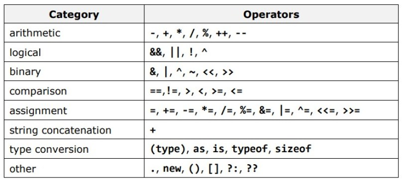
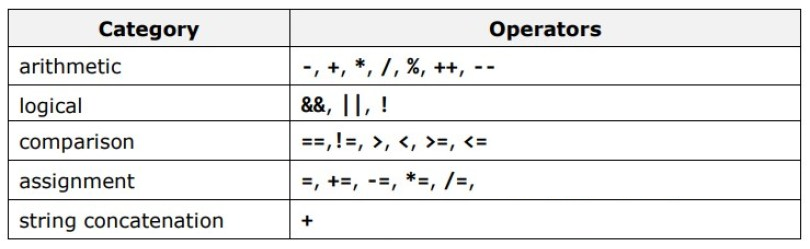
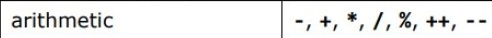
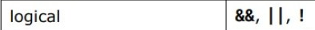
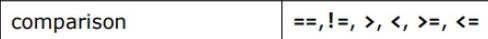
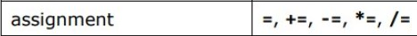

## Control Flow and Collections </br> #### Key topics for tonight <div style="text-align: left;"> - Operators </br> - Loops </br> - Implementations of Collections (List, Dictionary) </div> --- ## Operators <div class="fragment" style="text-align: left;"> </div> <div style="text-align: left;"> - Allows for basic operations between various data types </br> - The results of those operations are different for different data types </div> ```c# string result = "3" + "5" + "7"; // output: "357" int number = 3 + 5 + 7; // output: 15 ``` --- ## Operators (cont)  <div class="fragment"> Holy moly that's a lot of operators </div> --- ## Operators (cont)  <div style="text-align: left;"> Here is the filtered list that we should be worried about for this course </div> --- ## Arithmetic (Mathematical) Operators  <div class="fragment" style="text-align: left;"> Used within numeric data types to perform common math operations! </div> --- ## Arithmetic Operators - Code Examples ```c# // (+) Addition int addedInt = 6 + 5; //output: 11 double addedDouble = 4.3 + 5.9; //output: 10.2 // (-) Subtraction int subtractedInt = 6 - 5; //output: 1 double subtractedDouble = 5.5 - 4.1; //output: 1.4000000000000004 decimal subtractedDecimal = (decimal)(5.5 - 4.1); //output: 1.4 // (*) Multiplication int multipliedInt = 4 * 2; // output: 8 // (/) Division int dividedInt = 8 / 2; // output: 4 int dividedInt2 = 7 / 2; // output: 3 double dividedDouble = 7 / 2; // output: 3 double dividedDouble2 = 7.0 / 2; // output: 3.5 ``` --- ## Arithmetic Operators - Code Examples (cont) ```c# // (%) Modulo Operator int modulusInt = 16 % 5; // output: 1 // (++) Increment Operator // Note - Must be used on a variable! int value = 5; int prefixValue = ++value; // prefixValue = 6 value = 5; int postfixValue = value++; // postfixValue = 5 // (--) Decrement Operator int value = 5; int preDecrementedValue = --value; // preIncrementedValue = 4 value = 5; int postDecrementedValue = value--; // postIncrementedValue = 5 ``` <div class="fragment" style="text-align: left;"> <a href="https://docs.microsoft.com/en-us/dotnet/csharp/language-reference/operators/arithmetic-operators#increment-operator-">Microsoft Docs Example</a> </div> --- ## Logical Operators  <div class="fragment" style="text-align: left;"> Used within boolean operands (expressions) to <span style="color: cadetblue;"> resolve to a boolean value </span> </div> --- ## Logical Operators - Code Examples ```c# // (&&) Logical AND Operator bool result1 = false && false; // output: false bool result2 = true && false; // output: false bool result3 = true && true; // output: true // (&&) Logical OR Operator bool result4 = false || false; // output: false bool result5 = true || false; // output: true bool result6 = true || true; // output: true // (!) Logical Negation Operator (Unary Operator) bool result7 = !true; // output: false; bool result8 = !false; // output: true; ``` --- ## Equality and Comparison Operators  <div class="fragment" style="text-align: left;"> Used to compare two values and <span style="color: cadetblue;">resolves to a boolean value</span> </div> <div class="fragment" style="text-align: left;"> Important note! C# Doesn't do any type conversion on comparison operators </div> --- ## Equality and Comparison Operators - Code Examples ```c# // (==) Equality Operator bool result1 = 1 == 2; // output: false bool result2 = 1 == 1; // output: true bool result3 = 1 == "1"; // output: false // (&&) Logical OR Operator bool result4 = false || false; // output: false bool result5 = true || false; // output: true bool result6 = true || true; // output: true // (!) Logical Negation Operator (Unary Operator) bool result7 = !true; // output: false; bool result8 = !false; // output: true; ``` --- ## Assignment Operators  <div class="fragment" style="text-align: left;"> Used to set the value on the left side of the operator to the result of the right side of the operator. </div> --- ## Assignment Operators - Coding Examples #### Compound assignment operators ```c# // Normal assignment operator int value = 5; // (+=) Compound Addition Assignment value += 6; // output: 11 // The above line is the same as the below line value = value + 6; ``` --- ## Assignment Operators - Coding Examples #### Other Compound Assignment Operators ```c# int value = 11; // (-=) Compound Subtraction Assignment value -= 5; // output: 6 // (*=) Compound Multiplication Assignment value *= 2; // output: 12 // (/=) Compound Division Assignment value /= 3; // output: 4 // (%=) Compound Modulo Assignment value %= 3; // output: 1 ``` --- ## Operators - Concept check! <p style="text-align: left;"> - What is the result of `1 == "1"`? </br> - How could I go about seeing the character at index 3 of a string? </br> - What is wrong with the following code? </p> --- ## Conditional Statements #### If Statements ```c# bool shouldPrintHelloWorld = true; if (shouldPrintHelloWorld) { Console.WriteLine("Hello World!"); } ``` ```c# int number = 4; if (number < 2) { Console.WriteLine("The number is less than 2"); } else { Console.WriteLine("The number is greater than or equal to 2"); } ``` --- ## Conditional Statements (cont) ```c# int number = 4; if (number < 2) { Console.WriteLine("The number is less than 2"); } else if (number < 6) { Console.WriteLine("The number is between 2 and 5"); } else if (number < 10) { Console.WriteLine("The number is between 6 and 9"); } else { Console.WriteLine("The number is greater than or equal to 10"); } ``` --- ## Conditional Statements (cont) #### Switch Statements ```c# string pizzaTopping = "black olives"; switch (pizzaTopping) { case "pepperoni": Console.WriteLine("Too greasy"); break; case "pineapple": Console.WriteLine("With Ham? Heck yes!"); break; case "black olives": Console.WriteLine("10/10 it's a masterpiece!"); break; case "anchovies": Console.WriteLine("Disgusting, get it away from me"); break; default: Console.WriteLine("I don't recognize that topping, sorry :("); break; } ``` --- ## Loops - Just like in JavaScript, c# is able to repeatedly execute multiple statements within a code block! - It's important to be aware of the different types of loops as each type is useful in various situations #### keywords <p class="fragment" style="text-align: left;"> <span style="color: cadetblue;">break -</span> leave the loop entirely </br> <span style="color: cadetblue;">continue -</span> skip to the next iteration of the loop </p> --- ## For loop <p style="text-align: left; font-size: 1.25rem;"> - `int i = 0;` is the <span style="color: cadetblue;">initializer section</span>. This section runs once and intializes our index value (often using value `i`, or `j` for nested loops). </br> - `i < 3;` is the <span style="color: cadetblue;">condition section</span>. This section contains a boolean expression that for as long as it is true, the loop continues. </br> - `i++;` is the <span style="color: cadetblue;">iterator section</span>. This section defines what happens after each execution of the body of the loop. </p> ```c# for (int i = 0; i < 3; i++) { Console.Write(i); } // Output: // 012 ``` --- ## Foreach loop ```c# int[] fibNumbers = { 0, 1, 1, 2, 3, 5, 8, 13 }; foreach (int element in fibNumbers) { Console.Write($"{element} "); } // Output: // 0 1 1 2 3 5 8 13 ``` --- ## While loops ```c# int n = 0; while (n < 5) { Console.Write(n); n++; } // Output: // 01234 ``` <p class="fragment" style="text-align: left;"> - This loop will execute <span style="color: cadetblue;">zero</span> or more times, for as long as the conditional statement is true! </p> --- ## Do While loops ```c# int n = 0; do { Console.Write(n); n++; } while (n < 5); // Output: // 01234 ``` <p class="fragment" style="text-align: left;"> - This loop will execute <span style="color: cadetblue;">one</span> or more times, for as long as the conditional statement is true! </p> --- ## Concatenating Strings #### Via Loops ```c# string[] names = { "Carl", "Sierra", "Tolani", "Ankur", "Destin" }; Console.Write("List of C# TAs: "); string stringToBuild = "List of C# TAs:"; foreach (string name in names) { stringToBuild += $" {name},"; } stringToBuild = stringToBuild.TrimEnd(','); Console.WriteLine(stringToBuild); ``` #### Via string.Join method ```c# string[] names = { "Carl", "Sierra", "Tolani", "Ankur", "Destin" }; string namesToPrint = string.Join(", ", names); Console.WriteLine($"List of C# TAs: {namesToPrint}"); ``` --- ## Collections <p style="text-align: left;"> - Collections allow for us to create and manage groups of related objects. </br> </br> In c#, we have two key ways of making groups of related objects: </p> <p style="text-align: left; font-size: 1.25rem;"> - <span style="color: cadetblue;">Arrays</span> - should be used when working with a fixed number of elements (because the size of arrays don't change). </br> - <span style="color: cadetblue;">Collections</span> - provides more flexibility on the set of data being used, as collections allow for the addition and removal of elements. </p> <p class="fragment" style="text-align: left; font-size: 1.25rem;"> Two main reasons to use Arrays over Collections: </br> - Performance - Arrays take up less memory, and referencing elements in the array is quicker </br> - To Convey intention - When you choose to use an array, other developers looking at your code will know that you're probably not manipulating this data set. </p> --- ## Collections (cont) - Lists - <span style="color: cadetblue">List</span> is a class that <span style="color: cadetblue">implements</span> ICollection - We'll talk about implements more when we get to classes, but for now think of List as everything that a Collection is, and more! ```c# // Create the empty list List<string> names = new List<string>(); // Add a single value to the list names.Add("Ryan"); // Add multiple values to a list names.AddRange({"Ankur", "Carl", "Sierra", "Tolani", "Destin"}); // -- Print all names (a number of different ways) -- // Via loops foreach(var name in names) { Console.WriteLine(name); } // Via ForEach method on the names list names.ForEach(n => Console.WriteLine(n)); // Via the Join method on the string data type string commaDelimitedNames = string.Join(", ", names); Console.WriteLine(commaDelimitedNames); ``` --- ## Collections (cont) - Lists #### Other common List Methods! ```c# // Initialize a list with values List<string> names = new List<string>() { "Ryan", "Carl", "Sierra", "Tolani", "Ankur", "Destin" }; // Remove first matching item from list names.Remove("Ryan"); // Sort items in list (using default comparer) names.Sort(); // Determine if the list contains a particular element bool isCarlInNames = names.Contains("Carl"); // Determine amount of elements in the list int count = names.Count(); // Remove all elements from the list names.Clear(); ``` --- ## Collections (cont) - Dictionaries - Same as lists, <span style="color: cadetblue">Dictionary</span> is a class that <span style="color: cadetblue">implements</span> ICollection - Dictionaries store <span style="color: cadetblue">Key / Value Pairs</span>, much like objects in JavaScript! - Similarly, dictionaries allow us to pull out values by providing the related key to the dictionary - Dictionaries should be used when we want to organize values based on an identifier (our key) ```c# // Initialize a Dictionary with values Dictionary<int, string> numericToWrittenValue = new Dictionary<int, string>() { { 1, "One" }, { 2, "Two" }, { 3, "Three" } }; // Add a single value to the list names.Add("Ryan"); // Add multiple values to a list names.AddRange({"Ankur", "Carl", "Sierra", "Tolani", "Destin"}); // -- Print all names (a number of different ways) -- // Via loops foreach(var name in names) { Console.WriteLine(name); } // Via ForEach method on the names list names.ForEach(n => Console.WriteLine(n)); // Via the Join method on the string data type string commaDelimitedNames = string.Join(", ", names); Console.WriteLine(commaDelimitedNames); ``` --- <p class="fragment" style="text-align: left; color: red;"> - Beware! This approach can fail if attempting to parse incorrect values! </p> --- ## Using Directive #### Objective - Refer to code defined outside of the current namespace (often from other files) #### Javascript ```javascript import defaultExport from "module-name"; ``` #### C# ```C# using System; ``` <p class="fragment" style="color: cadetblue;"> Demo </p> --- ## Concept Check! <p style="text-align: left;"> - What's the difference between implicit and explicit conversion? </br> - Within a console application, how might I take a user's input and treat it as a number? </br> - What is the purpose of a using directive? </p> --- ## Strings <p style="text-align: left;"> - Are Immutable </br> - Are arrays of chars (characters) </br> - Represents a number of different characters (just like in Javascript!) </p> ```c# string name = "Ryan"; string message = "Hello students! How is the first lecture going?"; ``` <p class="fragment" style="text-align: left;"> - In C#, strings must use double quotes (") </br> - Single quotes are used for individual char values (') </p> --- ## String Manipulation #### Adding strings ```c# string firstName = "Ryan"; string lastName = "Shaw"; string fullName = firstName + " " + lastname; // output: "Ryan Shaw" // alternative way using string interpolation string fullName = $"{firstName} {lastName}"; // output: "Ryan Shaw" ``` #### Length of strings ```c# string name = "Ryan"; int nameLength = name.Length; // nameLength: 4 ``` --- ## Arrays <p style="text-align: left;"> - Are of fixed size </br> - Represent collections of the same data type </p> #### Initialize empty int array of length 10 ```c# int[] array = new int[10]; ``` #### Create array with initial values ```c# int[] array = {5, 5, 2, 8, 11, 53}; ``` --- ## Arrays (cont.) #### Referencing items in an array by index ```c# int[] array = {5, 5, 2, 8, 11, 53}; int indexZero = array[0]; // index of 0 will equal 5 int indexFour = array[4]; // index of 4 will equal 11 ``` <p class="fragment" style="color: cadetblue;"> Demo </p> --- ## Strings, Characters, and Arrays - Concept check! <p style="text-align: left;"> - What is meant by the statement "strings are immutable"? </br> - How could I go about seeing the character at index 3 of a string? </br> - What is wrong with the following code? </p> ```c# int[] someInts = {6, 3, 1}; int lastInt = someInts[3]; ``` --- ## Objects at a high level #### How objects are similar in C# and Javascript <p style="text-align: left;"> - Objects can have properties </br> - Objects can have methods </p> <p class="fragment"> This is an extremely simple look at objects, and we'll dive much deeper when we get to the chapter on classes </p> --- ## Objects (cont) #### Using static methods on a class - Static classes and methods don't care about state ```c# public static class TemperatureConverter { public static double CelsiusToFahrenheit(string temperatureCelsius) { // Convert argument to double for calculations. double celsius = Double.Parse(temperatureCelsius); // Convert Celsius to Fahrenheit. double fahrenheit = (celsius * 9 / 5) + 32; return fahrenheit; } public static double FahrenheitToCelsius(string temperatureFahrenheit) { // Convert argument to double for calculations. double fahrenheit = Double.Parse(temperatureFahrenheit); // Convert Fahrenheit to Celsius. double celsius = (fahrenheit - 32) * 5 / 9; return celsius; } } ``` --- ## Questions --- # Studio [Link](https://education.launchcode.org/csharp-web-development/chapters/data-types/studio.html) --- ## Resources / supplemental reading ##### Data Types - [Tutorial teacher - Data Types](https://www.tutorialsteacher.com/csharp/csharp-data-types) - [C# Corner - Data Types](https://www.c-sharpcorner.com/uploadfile/puranindia/type-conversions-in-C-Sharp/) - [Microsoft docs - Value Types](https://docs.microsoft.com/en-us/dotnet/csharp/language-reference/builtin-types/value-types) - [Microsoft docs - Reference Types](https://docs.microsoft.com/en-us/dotnet/csharp/language-reference/keywords/reference-types) ##### Type Conversion - [Microsoft Docs - Casting and Type Conversions](https://docs.microsoft.com/en-us/dotnet/csharp/programming-guide/types/casting-and-type-conversions) ##### Objects - [Microsoft docs - Static Class Members](https://docs.microsoft.com/en-us/dotnet/csharp/programming-guide/classes-and-structs/static-classes-and-static-class-members)